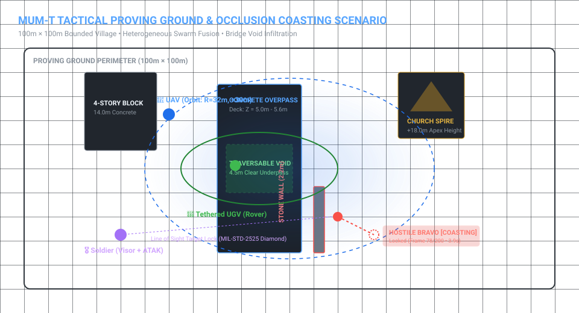
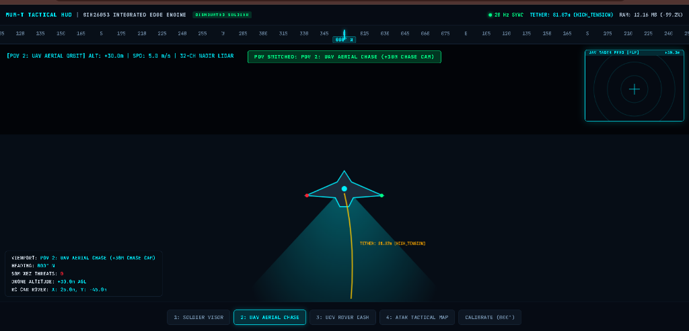
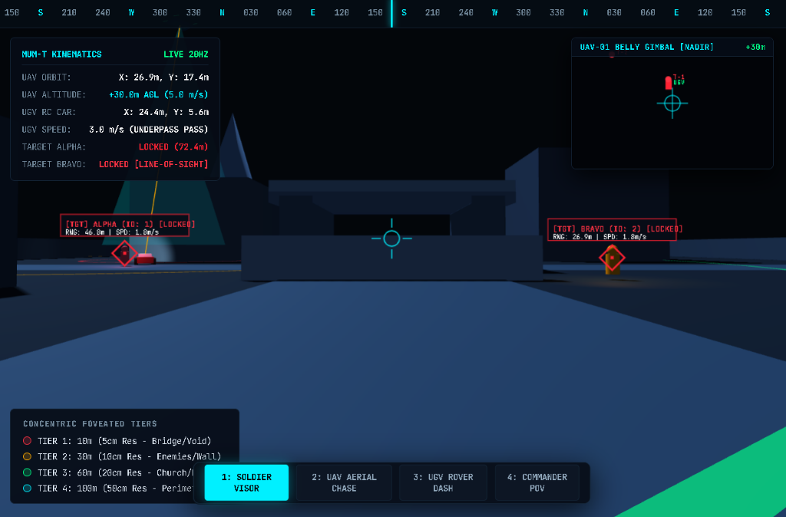
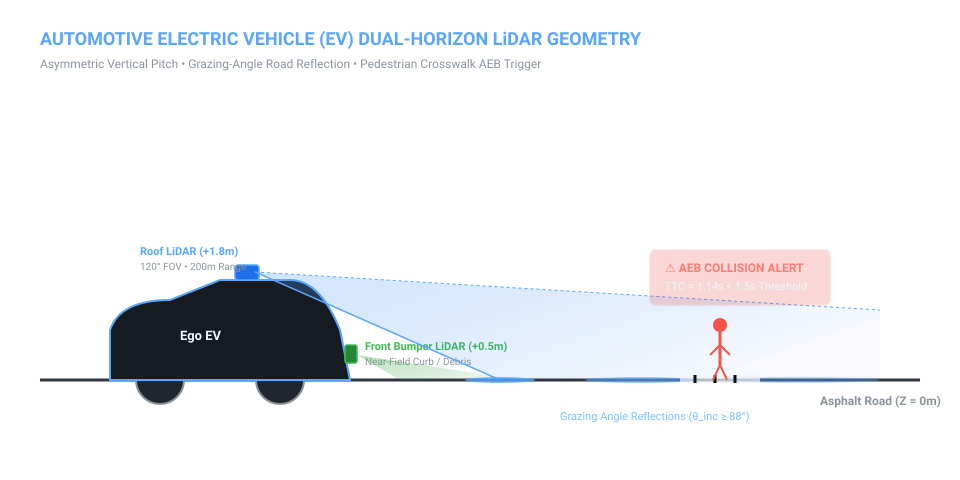
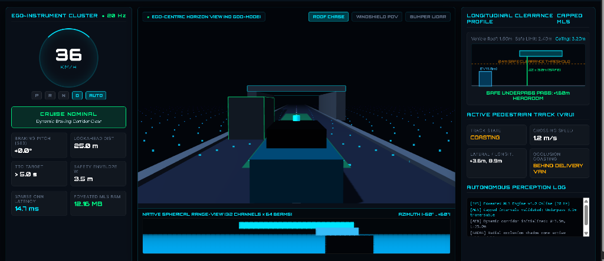
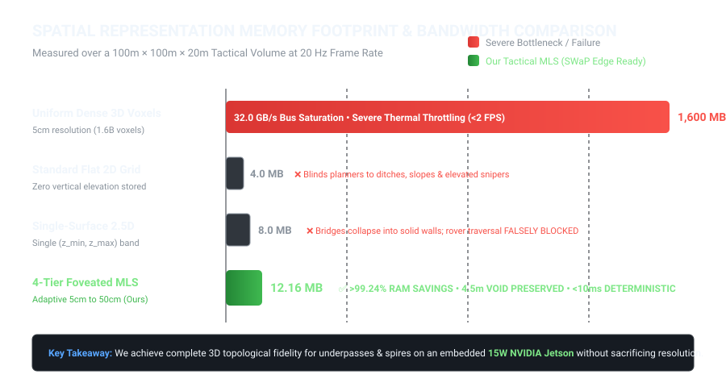
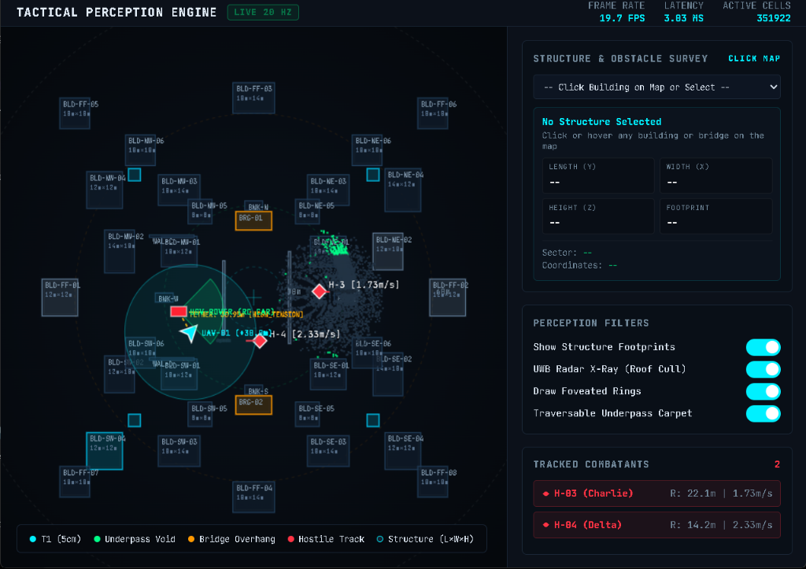
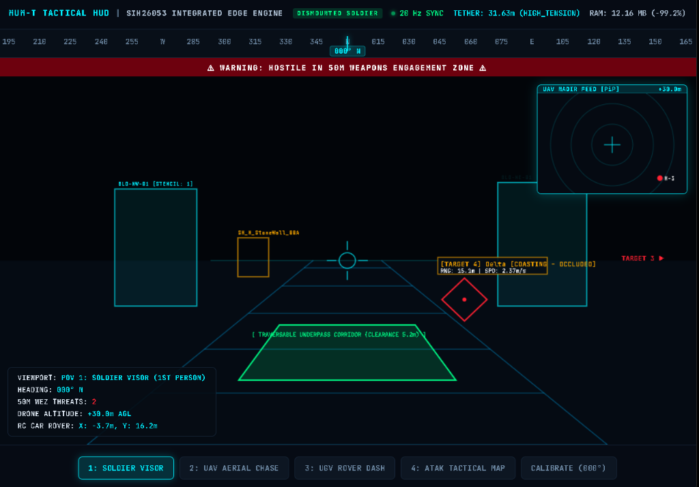

🌐 Complete End-to-End System Architecture
Decoupled sensor ingestion, 4-tier variable resolution foveation, Triebel multi-level surface vertical slicing, and multi-target Kalman tracking streaming to distributed tactical displays.

4-Tier Foveated Grid
Dynamically scales spatial resolution based on sensor range from 5 cm (near-field obstacle clearance) to 50 cm (far-field perimeter). Eliminates >90% of redundant cells.
Capped MLS Engine (K=3)
Discretizes vertical point distributions into up to 3 height intervals per cell. Retains the 4.5m traversable underpass clearance beneath overpass bridges where flat 2D and legacy 2.5D fail.
4.5m Void Preserved 12.16 MB RAMOcclusion Coasting
Continuous White Noise Acceleration (CWNA) Kalman Filter with Hungarian data association. Retains kinematic target lock across 200 consecutive missed frames (10.0s) behind stone barrier walls.
200-Frame Coasting Lock Zero Track Swaps🎖️ Manned-Unmanned Teaming (MUM-T) Tactical Proving Ground
Heterogeneous swarm collaboration inside a 100m x 100m bounded village proving ground with bridge overpasses, church spires (+18m Z apex), urban canyon blocks, and stone barrier walls.

Airborne UAV Reconnaissance
Circular flight orbit ($R=32\text{ m}$, $+30\text{ m}$ altitude) with 32-channel nadir LiDAR. Ingests roof and wall point clouds over UDP port 5001.

Tethered UGV Underpass Rover
Elliptical underpass infiltration ($A=26\text{ m}, B=16\text{ m}$) with 16-channel horizontal LiDAR beneath the bridge void. Streamed over UDP port 5002.

⚡ Civilian Autonomous EV Dual-Horizon Perception
Ground ego-centric LiDAR perception with roof-mounted long-range scanner (120° FOV, 200m range) and front bumper near-field scanner. Incorporates grazing-angle road reflections and crosswalk AEB collision avoidance.

Autonomous EV Cockpit Instrument Cluster (Running Live Output)
Live 20 Hz telemetry showing longitudinal capped MLS underpass profile (+1.60m safe pass) and active pedestrian occlusion tracking.

Autonomous Emergency Braking (AEB) Logic
Calculates dynamic Time-to-Collision (TTC) for pedestrians crossing urban crosswalks. Triggers emergency deceleration if TTC < 1.5 seconds.
📊 Memory Footprint & Bandwidth Benchmark
Comparative empirical analysis across a 100m × 100m × 20m tactical area at 20 Hz frame rate.

Empirical Comparison Matrix
| Perception Model | Cell Resolution | RAM Footprint | Memory Bandwidth | Bridge Underpass Void | Latency / FPS |
|---|---|---|---|---|---|
| Uniform Dense 3D Voxels | Uniform 5 cm | 1,600 MB (1.6 GB) | 32.0 GB/s | Preserved | >500 ms (<2 FPS) |
| Standard Flat 2D Grid | Uniform 5 cm | 4.0 MB | 0.08 GB/s | Discarded (No Z) | 4 ms |
| Single-Surface 2.5D | Uniform 5 cm | 8.0 MB | 0.16 GB/s | Collapsed (Blocked) | 6 ms |
| 4-Tier Foveated MLS (Ours) | Adaptive 5cm → 50cm | 12.16 MB (-99.24%) | 0.24 GB/s | Preserved (4.5m) | <10 ms (≥20 Hz) |
📡 Network Sockets & Telemetry Ports
| Port | Protocol | Direction | Data Payload |
|---|---|---|---|
| UDP 5001 | SIH1 Binary | UAV → Engine | Nadir 32-Ch LiDAR point cloud |
| UDP 5002 | SIH1 Binary | UGV → Engine | Horizontal 16-Ch LiDAR cloud |
| UDP 5003 | JSON | Engine → Unity | Target positions, speeds, lock state |
| UDP 5005 | Heartbeat | Sim → Watchdog | 10 Hz master clock sync |
| TCP 8000 | WebSocket | FastAPI → Web | 20 Hz synchronized tactical COP |
🎖️ Defense Standards Compliance
MIL-STD-2525D Symbology: Generates standardized diamond targeting brackets for hostiles (a-h-G-U-C) and circles for friendlies (s-f-G-U-C).
Cursor-on-Target (CoT): REST endpoint /api/cot emits standardized defense XML formatted with WGS-84 ellipsoidal geodesy for ATAK and WinTAK integration.
Commander C2 Desktop Web Radar (Live 20 Hz Feed)
Real-time 19.7 FPS, 3.03 ms latency top-down operational picture with foveated range rings and tracked hostile vectors.

Soldier Tactical AR Visor HUD
Direct line-of-sight heads-up reticles with 50m Weapons Danger Zone alert and projected 5.2m traversable underpass corridor carpet.
